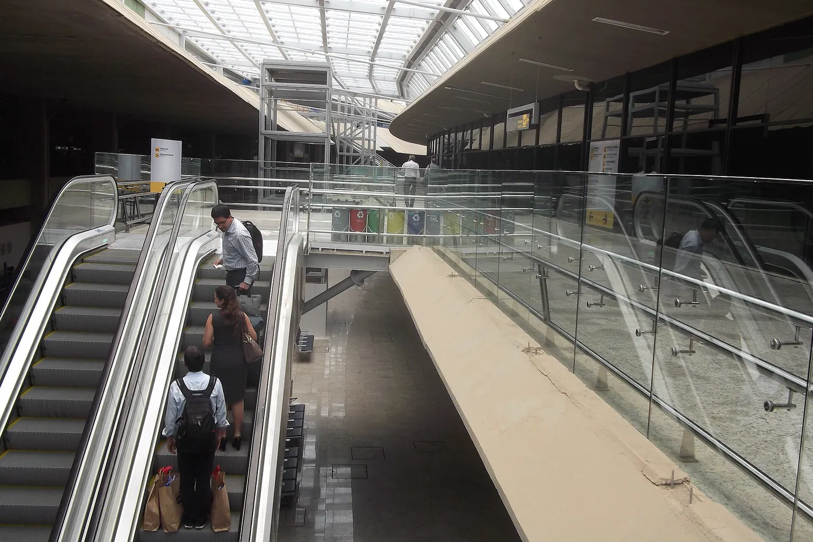
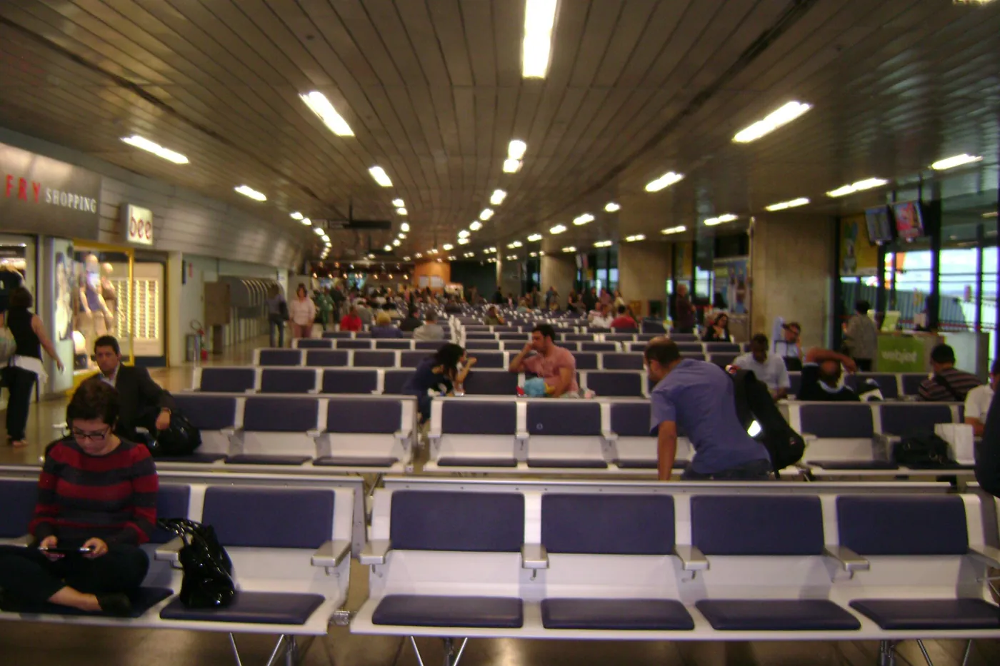

Salas VIP do Aeroporto de Confins: quais existem e como entrar
O BH Airport tem seis salas VIP: quatro no embarque doméstico, uma no embarque internacional e uma na área pública, antes do raio-x. A entrada sai por cartão de crédito, programa de acesso (Priority Pass, LoungeKey, DragonPass, Visa Airport Companion), categoria da passagem ou pagamento avulso na recepção. Este guia é informativo e não é vinculado a nenhuma das salas.
Onde cada sala fica
Como entrar em cada uma
Horários e preço avulso
Última verificação das informações: 25 de outubro de 2026. Horário, preço e regra de acesso de sala VIP mudam sem aviso. Confirme com a sala e com o seu emissor no dia da viagem.
São seis salas, e a diferença entre elas é onde ficam
Quatro no embarque doméstico, uma no internacional e uma na área pública. Saber isso antes decide se você passa pela inspeção de segurança primeiro ou depois.
ADVT VIP Lounge
Onde: segundo piso do embarque doméstico, ao lado do terraço panorâmico, depois do raio-x. Quem vem de conexão entra por um acesso próximo ao portão 2. Horário: 24 horas, todos os dias. É a maior do aeroporto e foi eleita a melhor sala VIP do Brasil no World Travel Awards 2026. Era chamada de Advantage VIP Lounge, então você ainda encontra os dois nomes na internet. Oferece fast track na inspeção de segurança.
Pede reserva antecipada. Chegar sem reserva pode significar ficar de fora em horário de pico.
Ambaar Lounge, portão 7
Onde: embarque doméstico, depois do raio-x, nas proximidades do portão 7. Horário: 24 horas. Foi ampliada e passou a ter cerca de 655 m². É a maior das três unidades Ambaar do aeroporto e a que tem mais poltrona de descanso.
Fica em uma ponta do terminal. Se o seu voo sai de um portão baixo, conte o tempo de caminhada na volta.
Ambaar Lounge, portões 2 e 3
Onde: embarque doméstico, depois do raio-x, no piso superior, próximo aos portões 2 e 3. Horário: das 4h30 às 23h, todos os dias. É a unidade mais central do terminal doméstico e a mais prática para voo da manhã bem cedo.
Fecha às 23h. Para voo de madrugada, a opção são as salas que abrem 24 horas.
Ambaar Lounge Internacional
Onde: Terminal 2, embarque internacional, depois do controle de passaportes e do raio-x, próximo ao portão 60. Horário: acompanha a malha internacional e costuma abrir cerca de duas horas antes dos voos, junto com a checagem de passaportes. É a única sala com banho no embarque internacional, com chuveiro cobrado à parte.
Não permite acesso no desembarque. Se o seu plano era usar a sala ao chegar, essa não serve.
BRT Lounges Confins, mezanino
Onde: segundo piso, de frente para o embarque doméstico, na área pública do terminal, antes da inspeção de segurança. Horário: 24 horas. Tem cerca de 270 m² e capacidade para até 86 pessoas. É a primeira sala VIP do aeroporto na área pública, o que muda a lógica: dá para usar sem ter passado pelo raio-x.
Área pública significa que você ainda precisa contar o tempo da inspeção depois. Saia com folga.
A sexta sala e o que vem por aí
O BH Airport informa seis salas VIP no total, sendo quatro no embarque doméstico. Guias de terceiros citam uma segunda unidade da BRT Lounges no setor doméstico, mas não consegui confirmar a localização e o horário dessa unidade em fonte oficial. Há também o anúncio de uma sala da Plaza Premium para a área doméstica, sem data de abertura confirmada.
Vale conferir o mapa do terminal no site do BH Airport antes de viajar, porque esse número já mudou duas vezes nos últimos dois anos.
Fora das salas VIP, o aeroporto tem o Living Heineken no primeiro piso, área pública, aberto 24 horas. Entrada livre, mas comida e bebida são pagas. Não é sala VIP e não substitui uma.
Cada sala aceita um conjunto diferente de cartões
Não existe um cartão que abra todas. Confira na linha da sala que você pretende usar antes de contar com a entrada.
Arraste a tabela para o lado para ver todas as colunas.
Sala
Onde fica
Horário
Programas de acesso
Avulso informado
ADVT VIP Lounge
Doméstico, 2º piso, depois do raio-x
24 horas
Priority Pass, LoungeKey, Mastercard Black, Visa Infinite, Elo Nanquim. Exige reserva.
R$ 180 por 3 horas, R$ 300 por 6 horas
Ambaar, portão 7
Doméstico, depois do raio-x
24 horas
Priority Pass, LoungeKey, Diners Club, cartões Visa e Bradesco elegíveis
R$ 200 por 4 horas, R$ 300 por 6 horas
Ambaar, portões 2 e 3
Doméstico, piso superior, depois do raio-x
4h30 às 23h
Priority Pass, LoungeKey, Diners Club, cartões Visa e Bradesco elegíveis, Visa Airport Companion
R$ 200 por 4 horas, R$ 300 por 6 horas
Ambaar Internacional
Terminal 2, depois do passaporte
Conforme os voos
Priority Pass, LoungeKey, Diners Club, cartões Bradesco elegíveis, executiva TAP, Star Alliance Gold e Miles&Go
R$ 250 por 4 horas, R$ 350 por 6 horas
BRT Lounges, mezanino
Área pública, antes do raio-x
24 horas
DragonPass, agências de viagem e cartões parceiros
Cobrança por hora de permanência
Valores e condições apurados em fontes públicas em outubro de 2026 e informados aqui apenas como referência. Preço de day pass, lista de cartões elegíveis e número de acessos gratuitos por ano são definidos pela sala e pelo emissor do cartão, e mudam com frequência. Confirme antes de contar com a entrada.
Pegadinha comum: ter um cartão Black ou Infinite não garante entrada ilimitada. A maioria dos emissores dá um número fixo de acessos gratuitos por ano, e o acompanhante quase sempre consome um desses acessos ou é cobrado na hora. Quem decide isso é o banco, não a sala.
O que você realmente encontra dentro de cada uma
Buffet e wi-fi existem em todas. O que varia de verdade é chuveiro, espaço de trabalho e bebida alcoólica.
O que tem em praticamente todas
Buffet com salgado, fruta e doce, café e chá, bebida não alcoólica, wi-fi, tomada, poltrona de descanso, ar-condicionado, painel de voos e banheiro. Esse é o piso comum das cinco salas que consegui confirmar.
Chuveiro: só em duas
A Ambaar Internacional tem duas salas de banho, uma com acesso para pessoa com deficiência, e o chuveiro é cobrado à parte. A BRT Lounges do mezanino tem seis banheiros, sendo um com chuveiro. As salas do doméstico que verifiquei não anunciam chuveiro.
Trabalho e videochamada
As unidades Ambaar informam estação de trabalho, e a Internacional cita espaço reservado para videochamada. A ADVT tem espaço de coworking. A BRT do mezanino tem posto de trabalho pensado para quem passa o dia no aeroporto.
Bebida alcoólica
As salas Ambaar informam bebida alcoólica no buffet. A ADVT cita vinho e espumante. A BRT do mezanino mantém geladeira com bebida alcoólica e não alcoólica. Rótulo e disponibilidade variam por horário.
Fast track na inspeção
A ADVT VIP Lounge oferece fast track, o acesso prioritário à fila do raio-x, além de um serviço de atendimento personalizado antes do voo. É o diferencial mais relevante dela para quem viaja em dia cheio.
Comida de verdade
A BRT do mezanino anuncia buffet 24 horas com refeição completa, inclusive prato mineiro e tapioca feita na hora. É o ponto mais forte dela em relação às outras, que trabalham mais com petisco e buffet frio.
Quanto tempo antes vale a pena chegar para usar a sala
A conta muda conforme a sala estar antes ou depois da inspeção de segurança.
Se a sua sala fica depois do raio-x, que é o caso das quatro do embarque doméstico e da internacional, o tempo útil dentro dela só começa depois do check-in, do despacho de bagagem e da inspeção. Em voo doméstico, chegar cerca de duas horas antes costuma render de 40 minutos a uma hora de sala. Em voo internacional, três horas antes rendem algo em torno de uma hora, porque ainda entra o controle de passaportes.
Se a sala é a da área pública, a conta inverte: você pode chegar bem mais cedo, usar o espaço antes do check-in e só depois enfrentar a fila. É a melhor opção para quem chegou de muito longe, para quem tem conexão longa de ônibus até o aeroporto e para quem precisa trabalhar antes do voo. Só não esqueça de reservar o tempo da inspeção depois.
O ponto que mais estraga esse planejamento não é o aeroporto, é o trajeto até ele. Confins fica a cerca de 40 km de Belo Horizonte, e o Anel Rodoviário é o trecho mais imprevisível do caminho. Perder 40 minutos no acesso significa perder exatamente o tempo que você planejou passar na sala VIP.
Se o tempo de sala VIP importa para você, o horário de saída de casa importa mais.
Onde ficam as salas dentro do aeroporto
Fotos reais de Confins para situar o percurso entre o check-in, o raio-x e a recepção da sala.
O saguão do Terminal 2. As salas do embarque doméstico ficam depois do raio-x, e a do mezanino fica antes dele, ainda na área pública, o que muda a hora em que vale a pena chegar.Foto de HVL, no Wikimedia Commons, sob licença CC BY 4.0. Ver original.

As escadas rolantes entre os pisos. Quase todas as salas de Confins ficam no piso de cima, então conte alguns minutos para subir e achar a recepção depois do raio-x. Foto de 2014.Foto de Eugenio Hansen, OFS, no Wikimedia Commons, sob licença CC BY-SA 4.0. Ver original.

A sala de embarque comum em horário de pico. É dela que a sala VIP tira você, trocando a fileira de assentos por poltrona garantida, tomada, buffet e banheiro sem fila. Foto de 2012.Foto de Andrevruas, no Wikimedia Commons, sob licença CC BY-SA 3.0. Ver original.
Perguntas frequentes sobre as salas VIP de Confins
As dúvidas que mais aparecem antes da viagem, respondidas de forma direta.
Quantas salas VIP existem no Aeroporto de Confins?
Seis, segundo o próprio BH Airport: quatro na área de embarque doméstico, uma no embarque internacional e uma na área pública do terminal. As operadoras são o grupo Ambaar, a ADVT (antiga Advantage) e a BRT Lounges. Esse número já mudou nos últimos anos, então confirme no site do aeroporto antes de viajar.
Qual sala VIP de Confins fica antes do raio-x?
A BRT Lounges do mezanino, no segundo piso de frente para o embarque doméstico. É a primeira sala VIP do aeroporto na área pública, o que significa que dá para usar antes de passar pela inspeção de segurança. As outras cinco ficam depois do raio-x.
Dá para entrar na sala VIP de Confins pagando na hora?
Sim, as salas vendem acesso avulso na recepção, o chamado day pass. As referências públicas apuradas em outubro de 2026 indicam faixas em torno de R$ 180 a R$ 200 por algumas horas no embarque doméstico e valores mais altos no internacional. Preço e disponibilidade mudam, então confirme na própria sala.
Qual sala VIP de Confins abre 24 horas?
A ADVT VIP Lounge, no segundo piso do embarque doméstico, e a BRT Lounges do mezanino, na área pública, funcionam 24 horas. A unidade Ambaar próxima ao portão 7 também é informada como 24 horas. A unidade dos portões 2 e 3 funciona das 4h30 às 23h.
Priority Pass funciona nas salas VIP de Confins?
Sim. As unidades Ambaar e a ADVT VIP Lounge aceitam Priority Pass e LoungeKey, conforme as listagens dos próprios programas e dos emissores. A BRT Lounges do mezanino trabalha com DragonPass. Vale checar o aplicativo do seu programa no dia, porque sala VIP entra e sai de rede com alguma frequência.
Meu acompanhante entra de graça na sala VIP?
Depende do emissor do cartão ou do programa, não da sala. A regra mais comum no Brasil é o acompanhante consumir um dos seus acessos gratuitos do ano ou pagar o avulso na hora. Em algumas condições de programa aéreo no embarque internacional é informado um acompanhante incluído. Pergunte ao seu banco antes de prometer a entrada a alguém.
Tem chuveiro nas salas VIP de Confins?
Em duas. A Ambaar Internacional, no Terminal 2, tem salas de banho com chuveiro cobrado à parte, e a BRT Lounges do mezanino tem um banheiro com chuveiro entre os seis que oferece. As salas do embarque doméstico que verifiquei não anunciam chuveiro.
Preciso reservar a sala VIP com antecedência?
A ADVT VIP Lounge é informada como sala que exige reserva. Nas demais, a entrada costuma ser por ordem de chegada, sujeita à lotação. Em véspera de feriado e em horário de pico, reservar ou ter um plano B é o que evita você descobrir a fila já com a mala despachada.
Dá para usar a sala VIP no desembarque, depois de chegar?
Em parte. As unidades Ambaar do embarque doméstico são citadas como salas que aceitam acesso no desembarque pelo Visa Airport Companion. A ADVT VIP Lounge e a Ambaar Internacional não permitem acesso no desembarque. A sala da área pública, por natureza, não depende de embarque.
Qual é a melhor sala VIP do Aeroporto de Confins?
A ADVT VIP Lounge foi eleita a melhor sala VIP do Brasil no World Travel Awards 2026, e é a maior do aeroporto. Na prática, a melhor para você é a que o seu cartão abre e que fica do lado certo do raio-x. Para voo de madrugada, as que abrem 24 horas. Para quem chega com muita folga ou precisa de refeição completa, a da área pública.
Outros guias do Aeroporto de Confins
Tudo sobre como o aeroporto funciona e como sair dele, reunido.
Quem usa sala VIP chega cedo ao aeroporto, e não dá para depender do Anel Rodoviário na hora errada. A Translado Vip Express faz o traslado porta a porta até Confins com horário combinado e preço fechado antes da viagem.